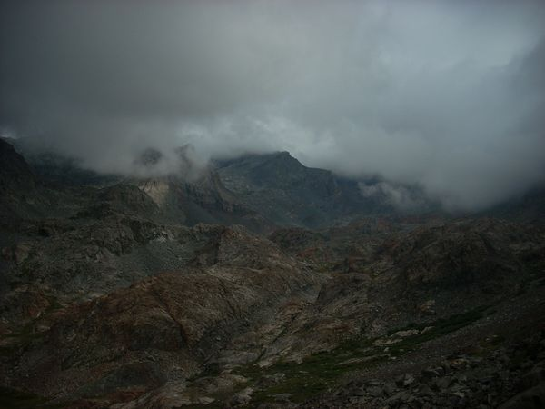

2017 Adventure North Glacier Pass Peakbagging - Mt. Davis The day after climbing Mt. Ritter was mostly a rest day. I got up late and headed for Mt. Davis around noon. I packed my gear and hiked to the west end of Lake Catherine where I took some photos and left my big back pack behind.
2017 Adventure North Glacier Pass Peakbagging - Mt. Ritter 3 years before this trip, I had tried to climb Mt. Ritter and failed. Now I was back with better gear and a better idea of the route.
2017 Adventure North Glacier Pass Peakbagging - Banner Peak From there it was an easy walk up to the top of the saddle on the glacier, while I could see cracks in the glacier on the side next to Mt. Ritter, there were no cracks or crevasses on the Banner Peak side and it was fairly flat.
2017 Adventure North Glacier Pass Peakbagging - Hiking into Thousand Island Lake After a doing Gibbs and Dana, I took a rest day and then got my permit from the Forest Service office at Mono Lake for a one week trip into the Ansel Adams Wilderness to do some peak bagging in the Ritter Range.
Peak Ascents Climbing Mt. Gibbs and Mt. Dana The day after hiking Mono Pass was a rest day, I moved my truck all the way up to the campground at Walker Lake and organized my gear, that hike I had done in my tennis shoes, this would require an ice ax and crampons.
2017 Adventure Hiking Mono Pass After doing Boundary Peak in Nevada, I headed into California and because the road over Tioga Pass was closed, had to adjust my plans.
Peak Ascents Climbing Boundary Peak - Nevada At the top I though about going down the boundary saddle and doing the peak in California, but didn't feel up to it so I took some more pictures and then headed down.
Peak Ascents Climbing Wheeler Peak - Nevada After visiting Zion National Park, drove to Cedar City and slept in the Walmart parking lot before heading west to Great Basin National Park. I stopped in at the visitor center, saw the
Gannet Peak Gannet Peak - Day 8 - Visiting the Bomber Wreck The last day of the the trip I hiked to the wreck of a B-24 that had crashed while on a training mission during the Second World War.
Gannet Peak Gannet Peak - Day 7 - Over the Top Just before treeline, I passed two parties, the first making noise with their bear bells and carrying bear spray, while the in the second, they all had large revolvers. It was quite an interesting contrast.
Gannet Peak Gannet Peak - Day 6 - Out of the Canyon On the morning of day 6, I woke up early, packed my gear and headed down the trail without breakfast, because I wanted to get out ahead of the snowmelt.
Gannet Peak Gannet Peak - Day 5 - The Ascent Once at the summit I found the summit register and stopped to take photos. I could see all of the ways to the Tetons, while to the south the mountain peaks stretched into the far distance.
Gannet Peak Gannet Peak - Day 4 - Getting to Base Camp On Day 4 I woke up, had breakfast and began heading up the trail once more. I had one serious creek crossing that made me glad that I had gotten up early and not waited till the snow melt made it much worse.
Gannet Peak Gannet Peak - Day 3 - Back on Track Since I had gotten lost on Day 2, most of day three was spend retracing my steps and getting back on the right path.
Gannet Peak Gannet Peak - Day 2 - Wrong Turn When I woke up, it was overcast and grey and just barely drizzling. Fortunately, unlike some of my other adventures, I had stayed dry throughout the night.
Gannet Peak Gannet Peak - Day 1 - Beginning In the summer of 2016 I decided that I wanted to climb Gannet Peak, the highest point in Wyoming and the most remote of all of the state high points.
 Ritter Range Failed Attempt on Mt. Ritter - Walkout I woke up and headed out just as fast as I could, the soaking wet sleeping bag meant that I was less miserable once I was hiking out. I started before the sunrise
Ritter Range Failed Attemp on Mt. Ritter - The Climb The day of the climb, I woke up really early and headed up the mountain. It was hard going with lots of talus and rubble. I made it up to the final lake
Ritter Range Failed Attempt on Mt Ritter - The Approach At the end of the summer of 2014, after I had been working at Summit Adventure in Bass Lake, California, I set off to climb Mt. Ritter by myself.The first day I
Peak Ascents Triple Divide Peak In the summer of 2014, I set out to climb Triple Divide peak in the Ansel Adam's wilderness in California.I parked at the Balls and headed up towards Jackass Lake. From Jackass
2017 Adventure Mammoth Cave Utah Mammoth Cave in Utah is a very interesting place. The short version is that it is comprised of two intersecting lava tubes that form a rough X. It collapsed almost at the dead
Peak Ascents Keyhole Route On Long's Peak This summer I climbed Long's Peak in Colorad via the Keyhole route. It was a peak that I have often seen and wanted to climb before the summer was over and conditions became
2017 Adventure Visiting Bryce Canyon National Park After doing Copper Belt Peak, I headed south to Bryce Canyon, again sleeping in my car and then heading into the park in the morning. I rode the shuttle bus in and went
2017 Adventure Climbing Copper Belt Peak I saw probably 20-30 mountain goats and passed quite a number of trees that had been initialed by sheepherders back in the early 1920-30's which I found rather interesting.
2017 Adventure 2017 Summer Adventure Begins At the beginning of the summer of 2017 I quit my job and headed out on a four month trip to backpack and hike climb mountains in the western United States.